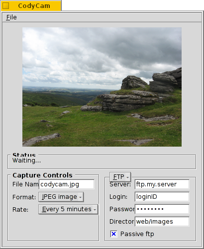

CodyCam
CodyCam
| Deskbar: | ||
| Location: | /boot/system/apps/CodyCam | |
| Settings: | ~/config/settings/codycam |
With CodyCam you take pictures at a specified interval from a connected webcam or any other video-in device and save it via FTP.
To the left under the preview, you set the filename that'll be suffixed with an increasing number for every picture taken. Beneath that you decide on the file format and the rate the pictures are taken.
To the right you choose either FTP or sFTP (if SSH is available) and enter the needed data to save the images on a server.